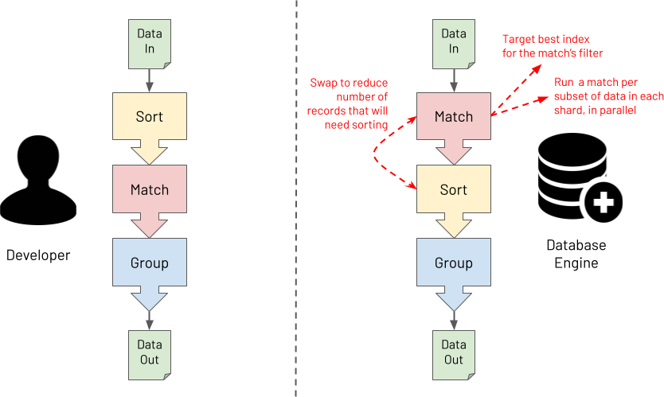

MongoDB's query optimizer is classically a
heuristics-based optimizer. What does this mean? This means when you get a query
like this:

MongoDB matches the steps of the query and does some optimizations like
switching steps, choosing indexes, and other canonical optimizations that usually
will make the query faster.
The Abstract Binding Tree, on the other hand, aims to create a new form of query
representation that allows queries to go through a
dynamic-programming based optimizer!
On this project, I worked on three components: I implemented $project functionality
in the new query optimizer. Secondly, I implemented type-bracketing essential to
greater-than and less-than queries. Lastly, I designed and implemented translating
$in expressions
in MQL; this took the size of the generated query tree from O(n)-sized tree to O(1)!
All of this was done in C++. On top of learning about
databases, C++, and better programming, I learned about build systems, continuous
integrations and continuous deployment (CI/CD), and more.
Intelligent Chart Review is a product that tackles a
multi-million dollar problem for physicians: surprisingly large amounts of time is
spent on chart review and chart data entry, rather than research or seeing patients.
Intelligent Chart Review seeks to make chart operations faster and more
automated
using Natural Language Processing features!
Physicians are able to upload charts for multiple patients, and review each patient
in quick succession while analyzing them for the same medical data. Chart review is
dictated by the template creator - this was created by me!
On this project, I worked on three major components: I created from the ground up
the
chart review template creator. Secondly, I refactored and rebuilt the Intelligent
Chart Review
underlying database structure for enforced foreign keys and optimized querying.
Lastly, I immplemented fuzzy search (Levenshtein distance) using the iKnow package
to help populate terms for NLP analysis.
As a result, Intelligent Chart Review was taken to a stage of viability in which it
was presented to two corporate clients by the end of the summer.
All of this was project was completed in Angular,
Typescript, and InterSystem's proprietary language. On top of learning about
databases, web development, and design, I learned a propietary language at-depth in
a two-week training program.
Machine Learning these days very often does not escape the
Jupyter Notebook. We aimed to launch an open-source MLOps framework to develop
industry-grade production ML pipelines.
CoalescenceML v0.5.1 was launched in Spring of 2022, and although is no longer supported, was a large
learning experience!